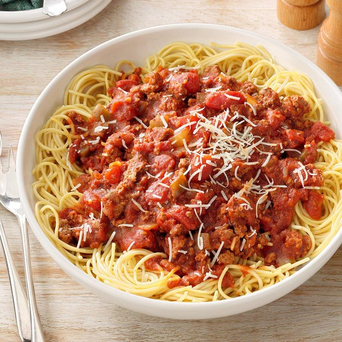

Spaghetti

Yummy and fast italian classic
Meaty recipe for the fans of the italian kind
Summon your inner chef and create this magnificent combo of meat and noodles
Ingredients
- 1 pound lean ground beef (90% lean)
- 1 pound bulk Italian sausage
- 1 medium green pepper, chopped
- 1 medium onion, chopped
- 8 garlic cloves, minced
- 3 cans (14-1/2 ounces each) Italian diced tomatoes, drained
- 2 cans (15 ounces each) tomato sauce
- 2 cans (6 ounces each) tomato paste
- 1/3 cup sugar
Recipe Instructions
- In a large skillet over medium heat, cook beef and sausage until no longer pink, 10-12 minutes, crumbling meat; drain. Transfer to a 5-qt. slow cooker. Stir in the green pepper, onion, garlic, tomatoes, tomato sauce, paste, sugar and seasonings.
- Cover and cook on low until bubbly, about 8 hours. Serve with spaghetti. If desired, top with Parmesan.